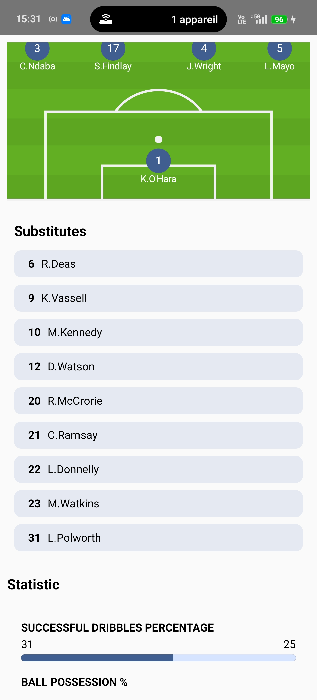

Football4U
Football4U est une application mobile innovante qui permet de suivre les résultats des matchs, les statistiques des joueurs, les classements des ligues et bien plus encore. Grâce à l'API Sportmonks, elle offre des données précises et en temps réel pour les passionnés de football.
Galerie
Fonctionnalités
- Résultats des matchs en temps réel.
- Classements des ligues et des clubs.
- Statistiques détaillées des joueurs et des équipes.
- Calendrier des matchs à venir.
- Favoris pour mieux suivre vos équipes et clubs préférez
Comment ça marche ?
Chargez un fichier 3D au format GLB ou GLTF, et utilisez les contrôles pour explorer le modèle. Le visualiseur utilise la bibliothèque Three.js pour rendre les objets en 3D.
À propos du projet
Ce projet a été développé pour explorer les possibilités de la visualisation 3D sur le web. Il utilise Three.js pour offrir une expérience fluide et interactive.